Summary
This article outlines the process for install or updating a certificate to prevent RDP certificate warnings during SbPAM workflows.
Prerequisites
-
Windows Server must have the Certification Authority and Certification Authority Web Enrollment roles installed and configured, so that the Certification Authority utility can be successfully launched as well as accessed via a web browser (https://<servername>/certsrv).
IMPORTANT: The Certification Authority's post-deployment configuration must be completed after installing both prerequisite roles.
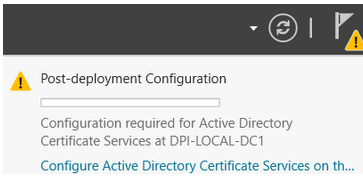
-
The domain must have set the Enrollment Policy to enable automatic enrollment and renewal. The Certificate Enrollment Policy for user and computer certificates is done in the Group Policy snap=in -> Default Domain Policy (or another group policy applied to all systems that will access an NPS server on a group-by-group basis). For that:
-
On the Domain Controller, open the Group Policy snap-in.
-
Navigate to Computer configuration/Policies/Windows Settings/Security Settings/Public Key Policies/ and enable the Certifcate SErvices - Certificate Enrollment Policy.
-
Generate Certificate
NOTE: If you already have a certificate to install, you can skip to Adding the Certificate to Each SbPAM Proxy Server section below.
- Open Certification Authority, open your CA, right-click Certificate Templates, and click Manage.
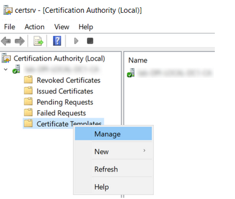
- In the Certificate Templates Console, right-click Workstation Authentication, and click Duplicate Template.
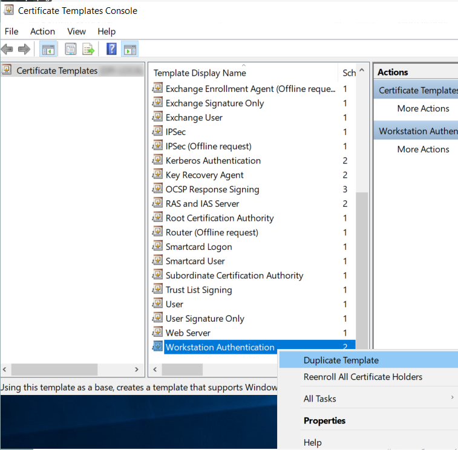
- On the General tab, change the name to Client-Server Authentication and enable the Publish certificate in Active Directory checkbox.
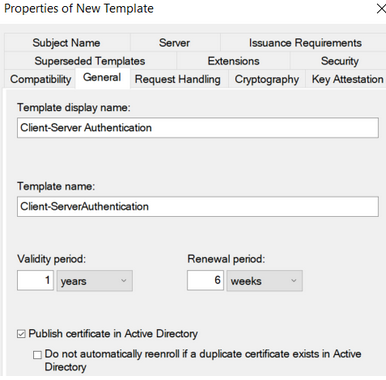
- On the Subject Name tab, enable the Supply in the request radio button.
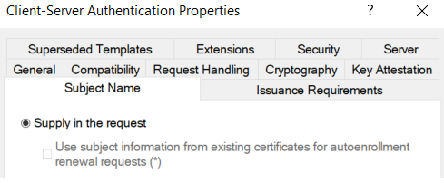 - On the Extensions tab, select Application Policies and click Edit. Click Add, then select Server
Authentication. Click OK until you return to the Properties of New Template dialog.
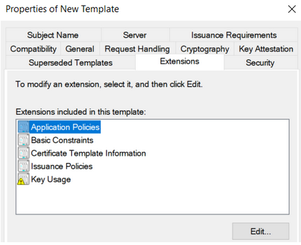
- On the Security tab, select Domain Computers and enable the checkbox to Allow Autoenroll. After, click OK and then close the Certificate Templates Console.
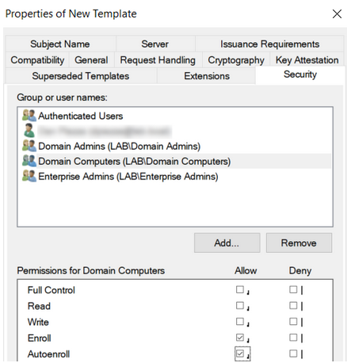
- Back in the Certification Authority, right-click Certificate Templates, hover over New, and click Certificate Template to Issue.
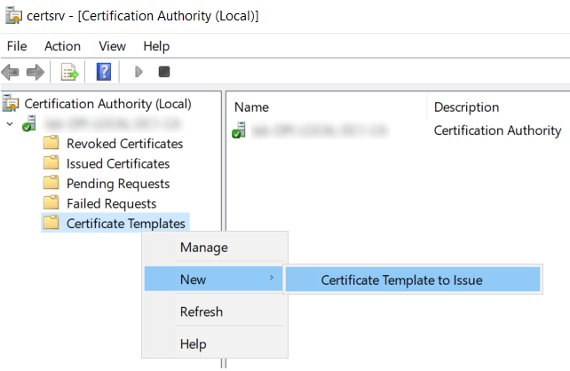
- Select Client-Server Authentication and click OK.
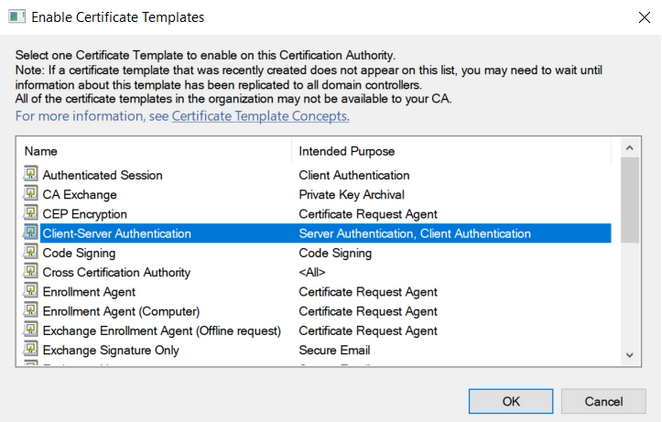
-
On the desktop, create a text file named request.inf, which contains the following text (change the
RED text to match your server certificate name):[Version] Signature="$Windows NT$" [NewRequest] Subject = "CN=sbpam-3.sblab.local" KeySpec = 1 KeyLength = 2048 Exportable = TRUE MachineKeySet = FALSE SMIME = False PrivateKeyArchive = FALSE UserProtected = FALSE UseExistingKeySet = FALSE ProviderName = "Microsoft RSA SChannel Cryptographic Provider" ProviderType = 12 RequestType = PKCS10 KeyUsage = 0xa0 HashAlgorithm = SHA256 [Extensions] 2.5.29.17 = "{text}" _continue_ = "dns=sbpam-3.sblab.local&" [EnhancedKeyUsageExtension] OID=1.3.6.1.5.5.7.3.1
-
Open Command Prompt as Administrator and change directory (cd) to the Desktop (or wherever you placed your request.inf file) and run:
certreq -new request.inf rdp.csr
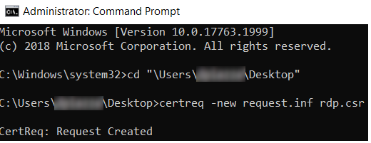
- To sign the certificate request, use your preferred signing mechanism. Active Directory Certificate Services is used in the following example (https://<servername>/certsrv).
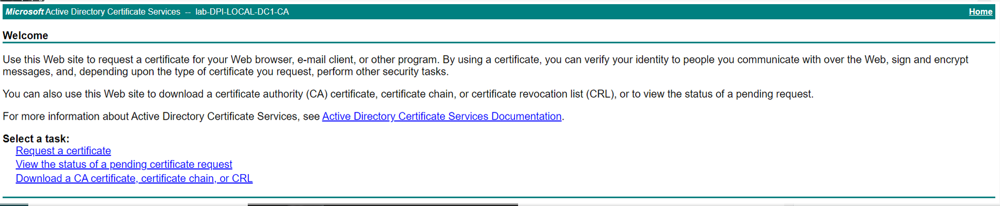
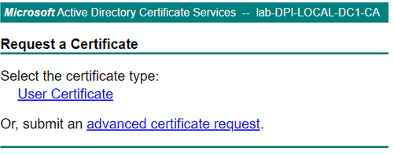
Click Request a certificate, then click advanced certificate request.
- Open the saved certificate signing request (rdp.csr) from Step 10 in Notepad. Copy the certificate request into the Saved Request field. Select Client-Server Authentication from the Certificate Template Dropdown. Click Submit.
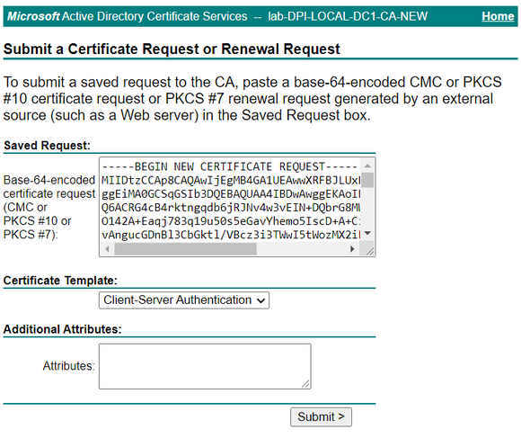
Leave other settings at default values, and click Submit.
- Select DER encoded and click Download certificate.
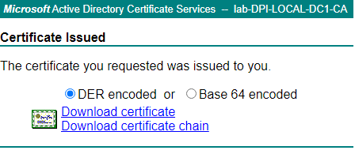
- Open the downloaded certificate and select Install Certificate. Proceed with all default values and complete the wizard.
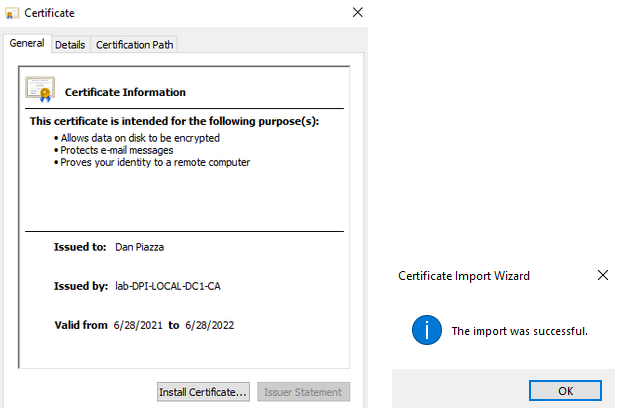
- To export the certificate, you'll need to view certificates for the current user by launching certmgr.msc using Windows' Run menu.
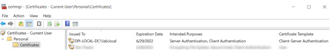
Right-click the installed certificate (the certificate using the Client-Server Authentication template) and click Export....
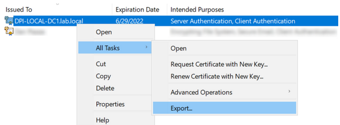
- In the Certificate Export Wizard, be sure to change the Export Private Key option to Yes, export the private key.
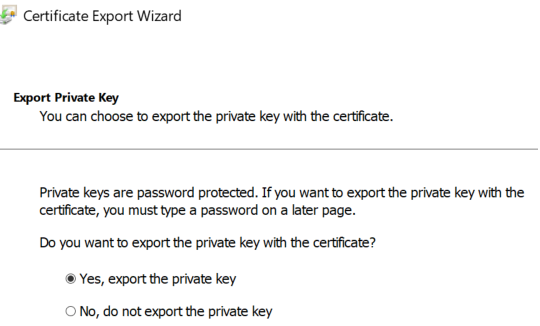
- For Export File Format, select Personal Information Exchange - PKCS #12 (.PFX). The following checkboxes should be selected under that option:
- Include all certificates in the certification path if possible
- Enable certificate privacy
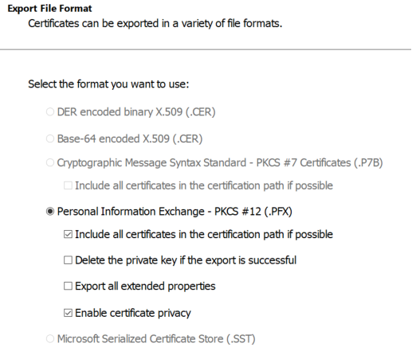
- For Security, enter a password of your choosing and select the AES256-SHA256 encryption option (3DES is no longer recommended by NIST).
- IMPORTANT: For "File to Export", the file name must be rdp.pfx. If it is named anything else, importing the .pfx file on each proxy server will not work.
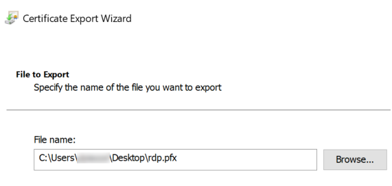 - This certificate can now be imported to each SbPAM Proxy Server.
Adding the Certificate to Each SbPAM Proxy Server
- Copy rdp.pfx (from the previous steps) to each SbPAM Proxy Server.
- On each SbPAM Proxy Server, run the following command via an elevated Command Prompt, and enter the certificate's password when prompted.
IMPORTANT: The path to sbpam-proxy.exe may be different depending on the install path you selected when installing SbPAM and/or distributed proxy services."C:\Program Files\Stealthbits\PAM\ProxyService\sbpam-proxy.exe" ca import -p [PATH]\rdp.pfx
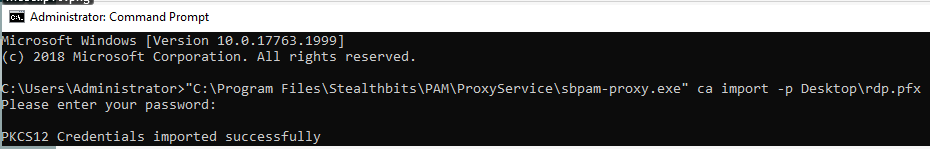
- The new certificate has now been imported to an SbPAM Proxy Server. Repeat this process for all SbPAM Proxy Servers if using more than one (the default installation of SbPAM uses one proxy service on the SbPAM server itself, however additional proxy services can be distributed).